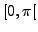
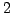
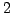

generates a Sock Diagram for the sampling of the given time series, p. . By default, no Sock Diagram is computed.
. By default, no Sock Diagram is computed.
parameter: number of phase angles in the interval
, if the maximum sock significance is  . Between
. Between  and , twice this number is used, and so on. This enhances the visibility of the Sock Diagram also in frequency and phase regions associated with a high sock significance.
and , twice this number is used, and so on. This enhances the visibility of the Sock Diagram also in frequency and phase regions associated with a high sock significance.
Piet Reegen
2009-09-23